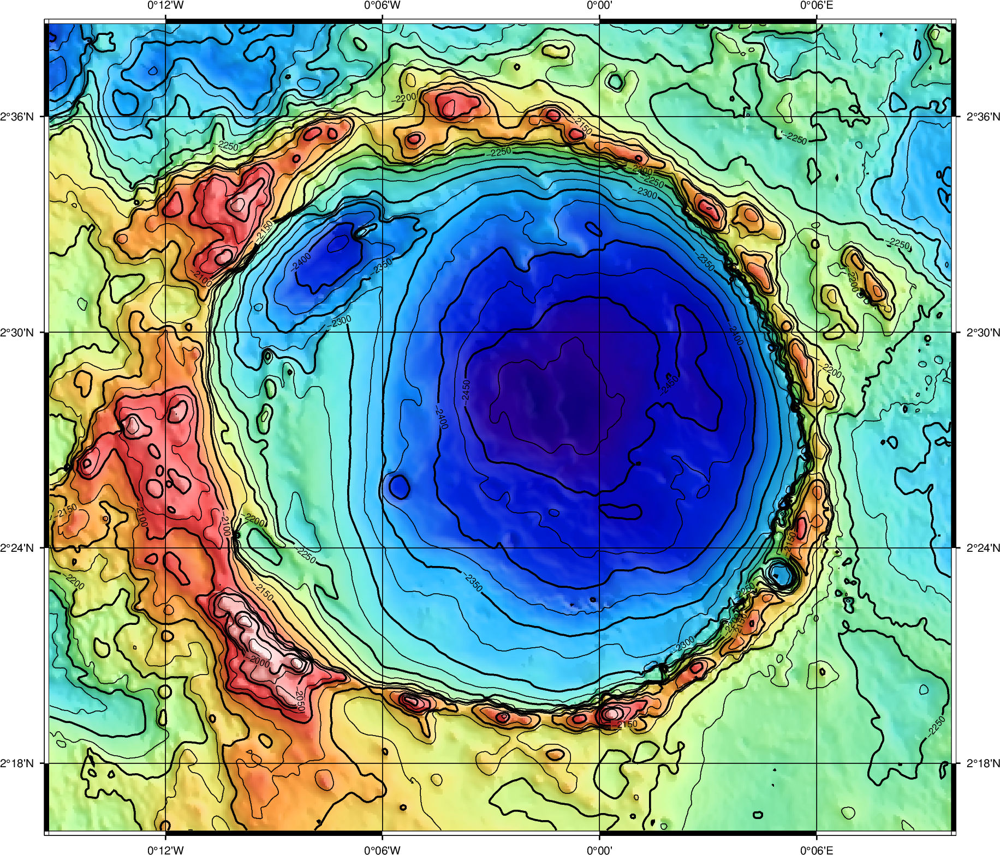
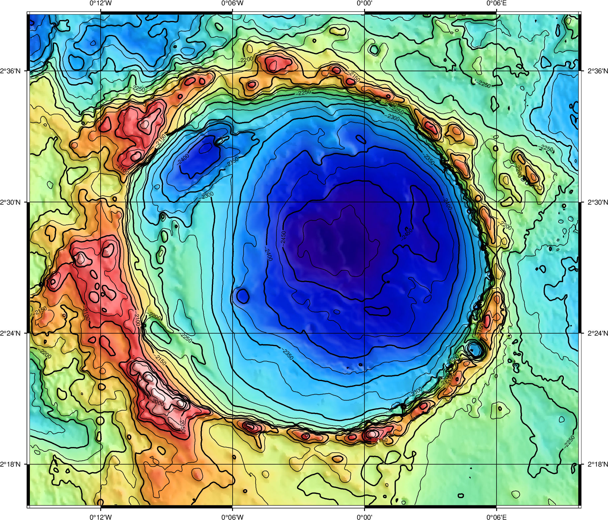

Sommario
- Introduzione
- struttura del laboratorio
- Aspetti Scientifici e teconologici
- Fondi
- Leadership
- Criticità
GISlab è il laboratorio di:
- Cartografia
- Fotogrammetria
- Geographic Information System
Elaborazione cartografica

Mosaici controllati
Bland et al., 2021
Cartografia geologica

Fotogrammetria
Stereofotogrammetria
 

Baschetti et al., 2022 - submitted
ExoMars' Pro3D
Struttura, fondi e progetti
GISlab@IAPS Timeline
Team
GISlab ha due anime:
- Struttura fisica in 1F28 allo IAPS
- Presenza in rete
Il laboratorio, edificio F IAPS Roma

La presenza in rete
sito web e servizi
Logo!
WebGIS@IAPS: Interattività sui dati
Collaborazioni con progetti

Prospettive:
- Interoperabilità dei dati
- Sostenibilità software e dati
- Sviluppo di nuovi paradigmi di analisi dati
- Approccio interdisciplinare
- sinergie con progetti esistenti